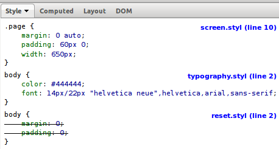

You need to install Firebug and the FireStylus extension for Firebug to use this sample.
Then, right click anywhere on the page and select "Inspect Element".
You can also press F12 to launch Firebug and go to the "HTML" pane.
The Stylus filename and line numbers of the Stylus-generated CSS styles appears rather than those of the generated CSS as suggested by the following screenshot :
FireStylus should work with all versions of Firefox after and including 3.0, and all Firebug versions after and including 1.4.